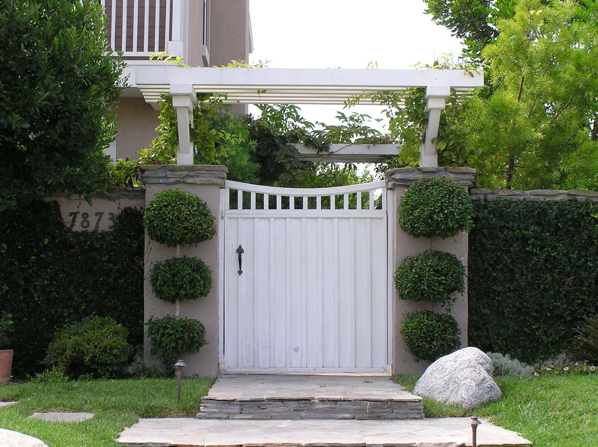

Start a project
Start your project.
Tell us a little about the property and what you have in mind. We will call to set up a free on-site consultation.
Before you reach out
Frequently asked questions.
Do you charge for the first consultation?
No. Your first on-site consultation is free. We walk the property, talk through goals and budget, and explain how the design process works.
What does a landscape design cost?
It depends on the size and complexity of the property. Residential design plans in the Austin area commonly run $1,500 to $5,000; we quote ours clearly after the consultation.
Is there a minimum project size?
Installation projects start at $3,000.
How will I know what is happening during construction?
We use project management software on most projects, send weekly progress reports with photos, and schedule walkthroughs. Commercial projects also get a monthly site audit report.
Are louvered pergolas worth it in Central Texas?
For most outdoor living spaces, yes. Motorized louvers give you full shade in July, open sky in October, and rain cover with a built-in gutter — in one aluminum structure that does not need staining.
Do you work on commercial and multifamily properties?
Yes. We design and build entryways, amenity courtyards, pool areas, courts, outdoor kitchens, dog parks and drainage for communities and commercial owners.
Are you licensed?
Finch is a licensed irrigator (LI-0030113), a certified Azenco Outdoor and MagnaTrack dealer and installer, and an A+ rated, BBB Accredited business.